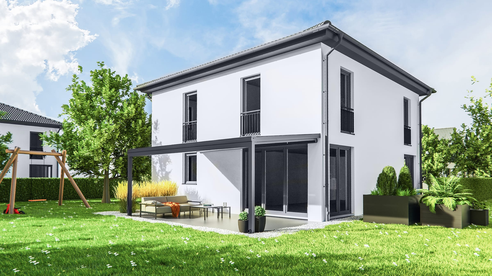
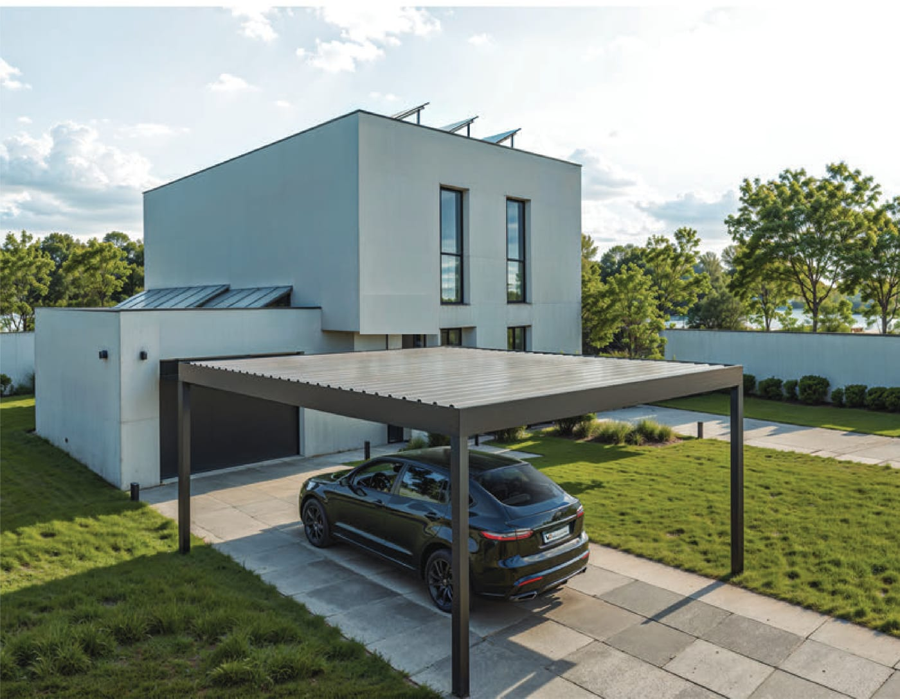

Unser Heimatort – hier sind wir zu Hause und in wenigen Minuten bei Ihnen.
Waldshut-Tiengen ist unser Firmensitz. Ob Altbau in der Tiengener Altstadt, Reihenhaus in Waldshut oder Neubau in einem der Ortsteile: Wir kennen die Häuser, die Hanglagen und das Wetter am Hochrhein aus eigener Erfahrung. Für Sie heißt das kurze Wege, schnelle Termine und ein Ansprechpartner, der auch nach der Montage um die Ecke ist.

Besonders gefragt sind in Waldshut-Tiengen Terrassendächer mit Glas an Einfamilienhäusern, Kaltwintergärten mit Glas-Schiebewänden für die Übergangszeit und Carports neben dem Haus. Bei Hanglagen planen wir die Pfosten und die Entwässerung so, dass das Regenwasser sauber abgeführt wird – auch bei einem Gewitter, wie es am Hochrhein im Sommer häufig vorkommt.
Waldshut · Tiengen · Aichen · Breitenfeld · Detzeln · Eschbach · Gaiß · Gurtweil · Indlekofen · Krenkingen · Waldkirch
Vom klassischen Terrassendach bis zum Kaltwintergarten – alles aus einer Hand.


Ja. Wir sitzen direkt in Waldshut-Tiengen – Beratung und Aufmaß sind meist schon innerhalb weniger Tage möglich. Beratung und Aufmaß vor Ort sind für Sie kostenlos und unverbindlich.
In Baden-Württemberg sind Terrassenüberdachungen an Gebäuden bis 30 m² Grundfläche und bis 3 m Tiefe in der Regel verfahrensfrei. Abstandsflächen und ein eventueller Bebauungsplan gelten trotzdem. Wir prüfen das bei der Beratung und unterstützen Sie bei Bedarf mit allen Unterlagen für den Bauantrag.
Nach dem Aufmaß und Ihrer Freigabe wird Ihre Anlage nach Maß in Deutschland gefertigt. In der Regel ist sie nach wenigen Wochen montagebereit; die Montage selbst dauert meist ein bis zwei Tage.
Der Preis hängt von Größe, Dachtyp, Glas und Extras wie Seitenwänden oder LED ab. Einen ersten Richtpreis bekommen Sie in unserem 3D-Konfigurator, ein verbindliches Festpreis-Angebot nach dem kostenlosen Aufmaß vor Ort.
Kostenlose Beratung und Aufmaß vor Ort – wir melden uns innerhalb von 24 Stunden.